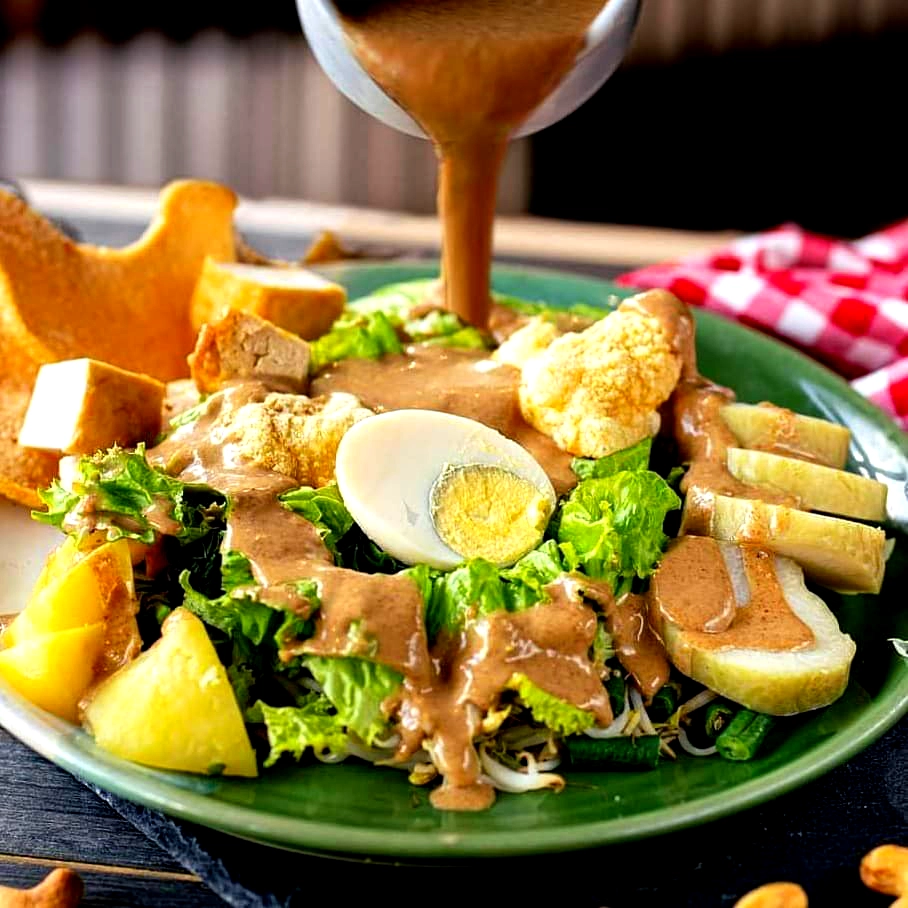
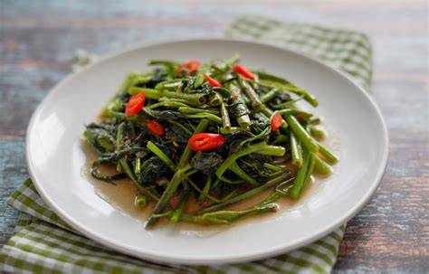

Blog RecipeMate
Artikel, tips memasak, dan inspirasi menu sehari-hari untuk membantu kamu lebih percaya diri di dapur.
Artikel Terbaru
-
 Tips Memasak
Tips MemasakTips Memasak Nasi Goreng agar Lebih Lezat
Nasi goreng yang enak bukan soal bumbu saja. Ada beberapa hal kecil yang bisa membuat hasilnya jauh berbeda, mulai dari jenis nasi hingga urutan memasak.
-

Bahan MakananCara Menyimpan Bahan Makanan agar Tetap Segar
Bahan makanan yang disimpan dengan benar bisa bertahan lebih lama dan tetap bergizi. Pelajari cara menyimpan sayuran, daging, dan bahan kering yang tepat.
-

PanduanPanduan Memilih Bahan untuk Menu Harian
Memilih bahan yang tepat membuat proses memasak lebih mudah dan hasilnya lebih konsisten. Panduan ini membantu kamu berbelanja lebih cerdas setiap minggu.
-
 Perencana Menu
Perencana MenuTips Menyiapkan Menu Makan Selama Seminggu
Merencanakan menu mingguan bisa menghemat waktu, mengurangi pemborosan bahan, dan memastikan kamu makan lebih teratur. Mulai dari mana yang paling mudah.